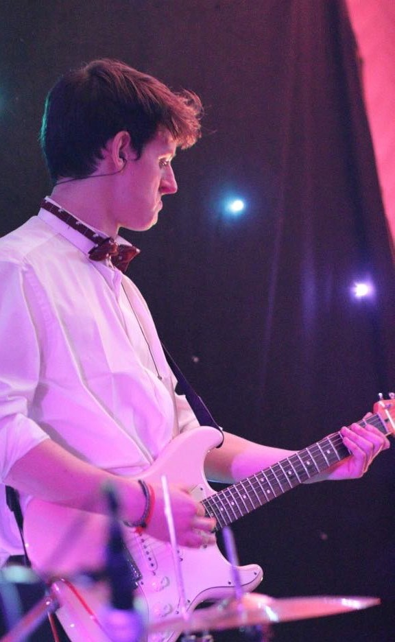

Meet the band
Hannah Forster
The Forster to our mustard cutters. Hannah is the one that people actually like.


Andy 'Silky' Silk
Not just a pretty face. Andy brings silky backing vocals as well as mad keys skills.
Joe Crossley
Unanimously agreed that Joe is the most musically gifted in the band.

Harry Wilkinson
The outrageousness of Harry's bass licks are matched only by the expressions on his face...
Ben DeGaris (Deej)
Ben plays drums. Occasionally he remembers to bring sticks.


The Brass Section
The less said about this lot the better. We only let them play with us because they're a laugh to have around.